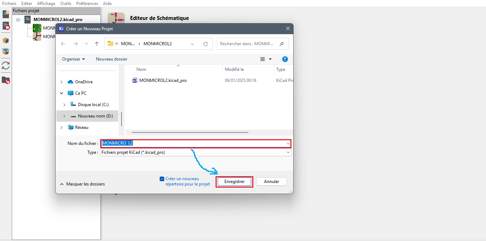
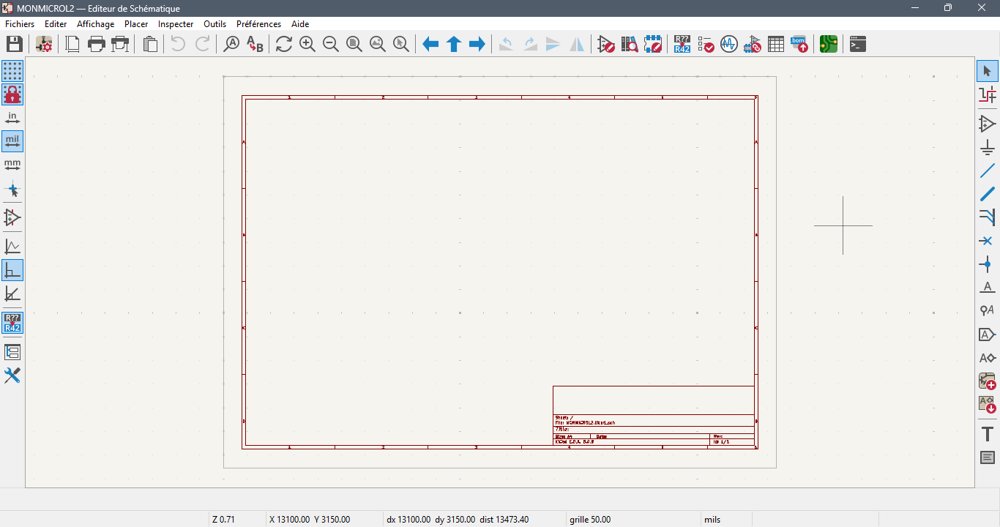

Projet 1
Partie A : Réalisation du PCB
1-Création du projet et Ouverture de l’éditeur Schématique
Ouvrir le logiciel Kicad, aller dans l’onglet fichiers puis cliquez sur nouveau projet. Ensuite nommer votre projet et enregistrez-le. Le contenu du dossier s’affichera sur l’interface du logiciel en haut à gauche, faire un clic gauche sur l’éditeur schématique pour l’ouvrir.


Après avoir cliqué sur l'éditeur schématique, on se retrouve avec l'interface suivant.

2-Réalisation du schéma de câblage du PCB
Pour la réalisation de notre circuit imprimé il a été utilisé les symboles (composants) suivants :
-Un microcontrôleur ATmega 328P
-Un Quartz de 16 MHZ
-Une résistance de 10 kΏ et une de 220 Ώ
-Une résistance de 100 nF
-Des broches
-Condensateurs de 22pF
-Une LED
-Un bouton poussoir
-Un module USB
a-Ajout d’un symbole (composant)
Comment ajouter les composants ?
Le processus est décrit par les deux images successives ci-dessous. Faire un clic gauche sur les zones encadrées en rouges. Une fois que vous cliquez sur le symbole « Ajouter un symbole », une fenêtre s’ouvre. Dans la barre de recherche de cette fenêtre enter le nom du composant recherche puis sélectionnez le pamis la liste des éléments affichés. Une fois le composant sélectionné appuyer sur OK puis clic gauche avec la souris pour fixer le composant. Répéter le processus pour tous les composants (symboles) à ajouter.
b-Connection des composants (symboles) et Annotation des pattes
Cliquez sur l’élément encadré en rouge puis clic gauche sur les pattes des différents symboles l’un vers l’autre pour les connecter NB : Les pattes sont les éléments entourés en orange
C- Comment annoter les pattes (Ajout Label) des symboles ?
Suivre le processus indiqué sur l’image par la flèche et les éléments encadrés. Commencer par l’élément encadré en rouge à droite « Ajout Label » en faisant un clic gauche
Après le clic sur le OK de la fenêtre qui s’est ouverte ci-dessus, faire clic gauche pour déposer le Label devant composant où la connexion aura lieu puis relier.
On sait maintenant relier n‚Äôest-ce pas ? üòä
Voici ce que l’on obtient
3-Affectation des empreintes
Pour notre projet voici les empreintes utilisées
Comment assigner les empreintes ?
Appuyer sur « l’icône assigner empreintes » : l’élément encadré en rouge puis suivre les étapes indiquées sur les images qui suivent.

Visualisation 3D de l’empreinte

Appuyer sur OK juste en bas a droite de la fenêtre pour enregistrer
4-Commutation à l’éditeur PCB et Organisation
Faire un clic gauche sur l’éditeur de PCB pour l’ouvrir
Une fois la mise à jour du PCB fait, organiser les symbols dans ce ordre
Paramétrage de l’épaisseur des pistes
Dans le cadre de notre projet nous avons utilisé comme épaisseur de piste 0.4 mm
Comment tracer les pistes ?
Sélectionner la couche « B.cu » puis suivre le processus comme indiqué sur l’image Pour annuler une action appuyer sur la touche esc du clavier
Comment réaliser le cadrage ?
Sélectionner « Edge cuts » : permet de dimensionner notre PCB Cliquez sur le petit carré à droite encadré en rouge pour tracer le rectangle puis dans la suite faire double clic sur une ligne du rectangle pour modifier les paramètres du rectangle. On prendra 0.8 mm comme largeur de ligne
On obtient :
Des actions de l‚Äôimage pr√©c√©dente d√©coule celle-ci donnant un visuel 3D de notre PCB üëá
Enegistrement sous fichier svg
Cocher les memes cases comme indiquée sur l'image.